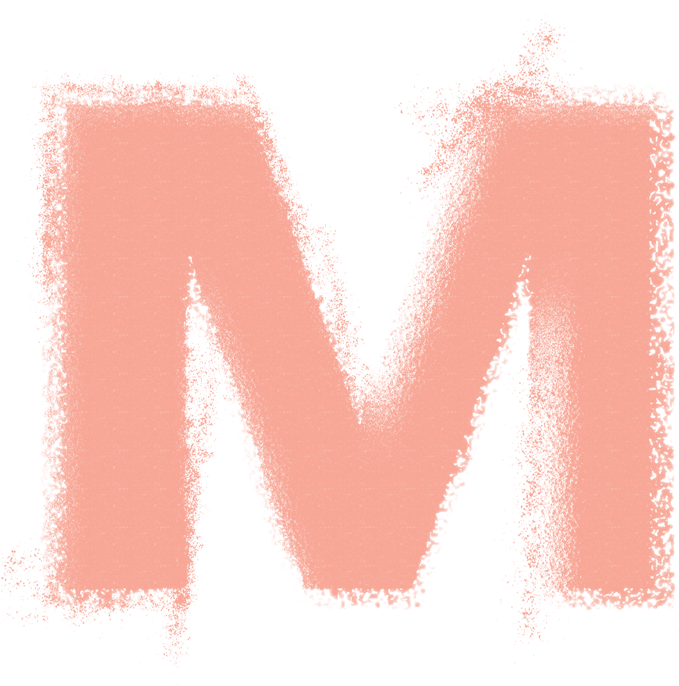
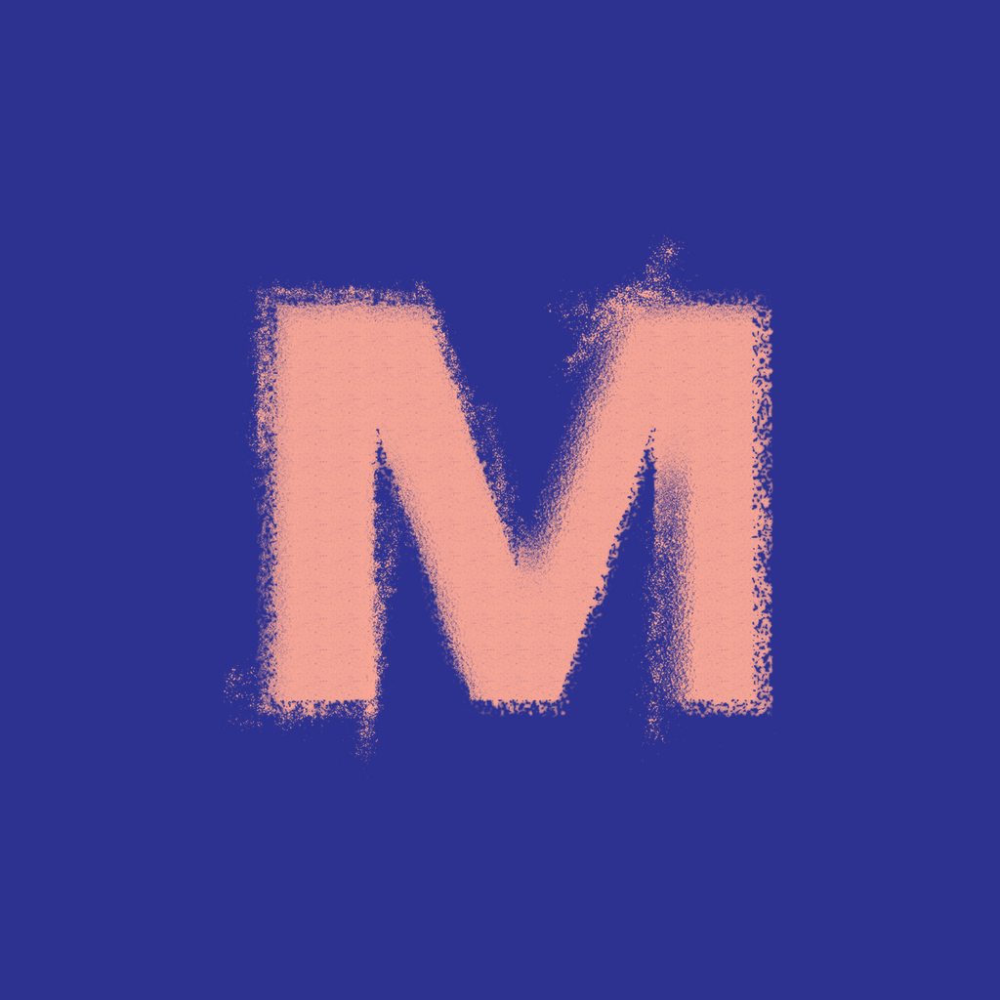
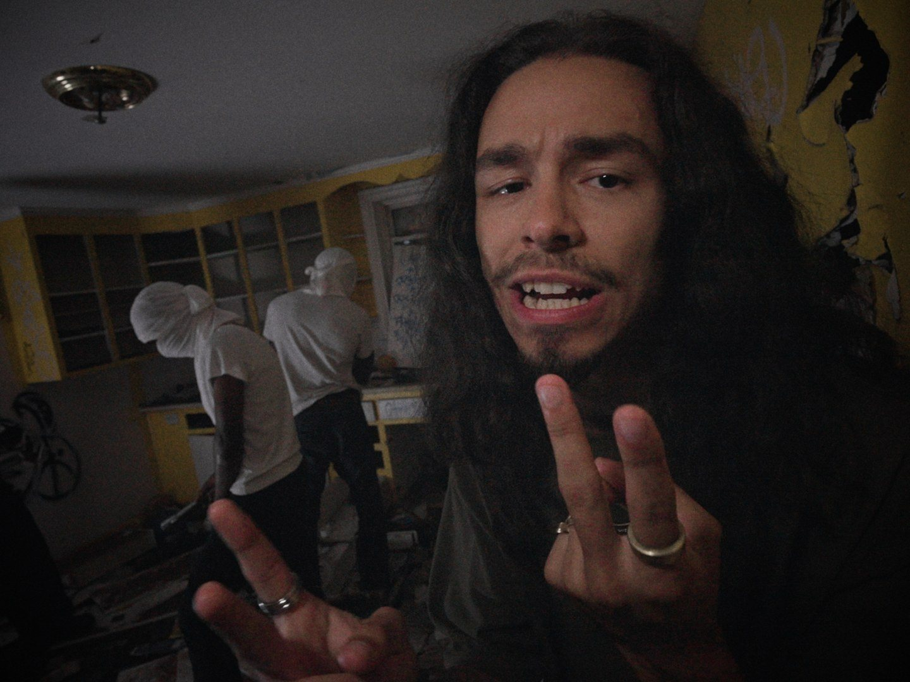
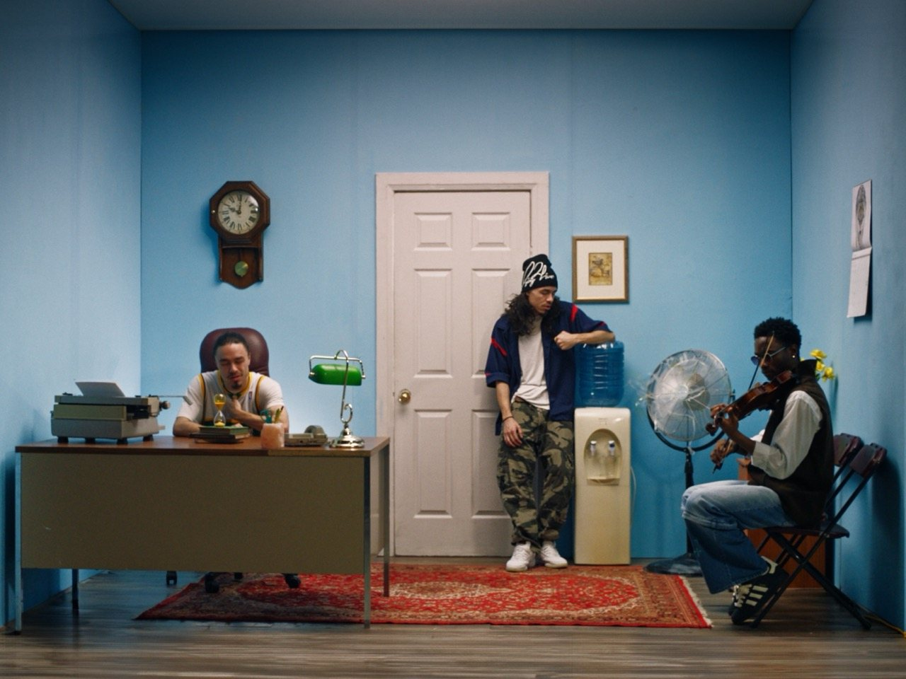
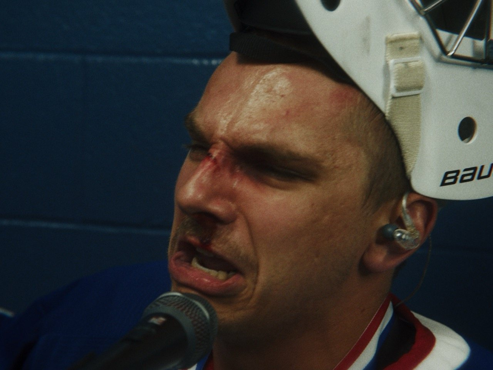
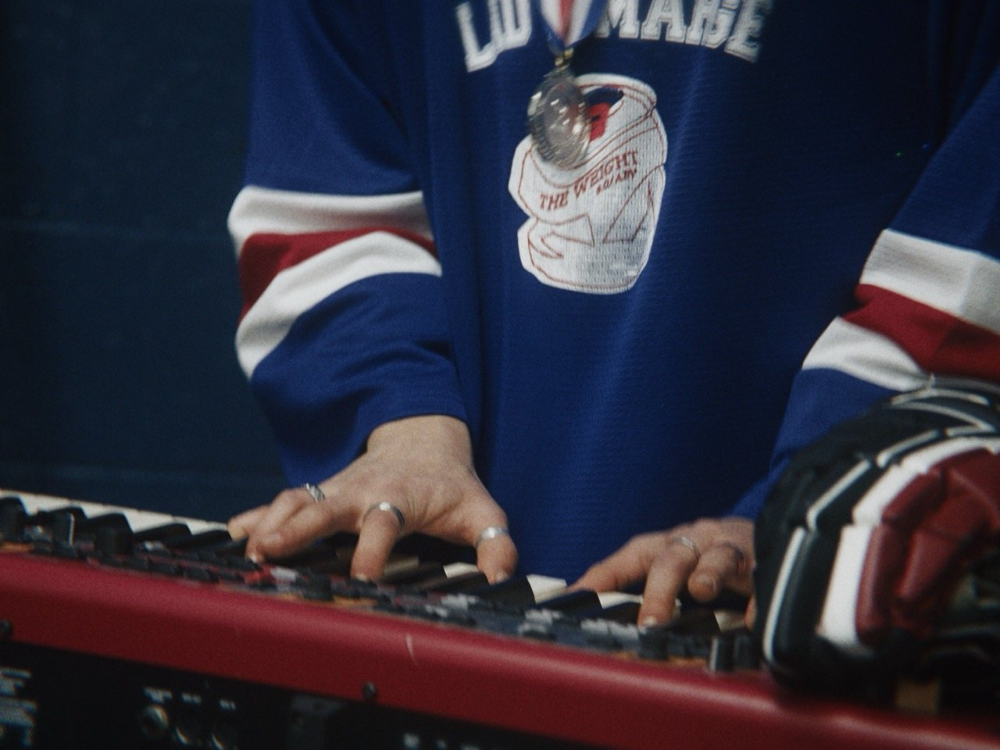
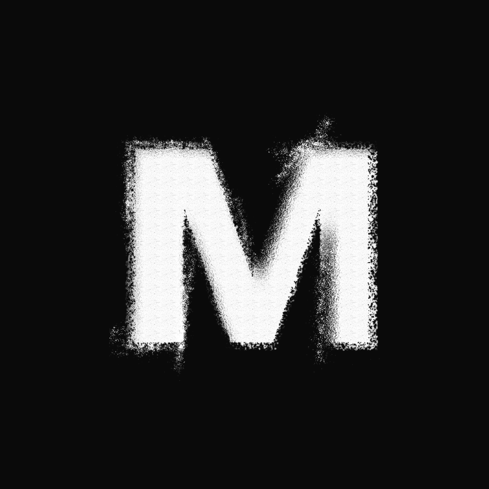

The Muk Post
brand system.
Professional grade integration of sight and sound. One page to find the right logo, the right colour and the right words, so nothing gets guessed.
Grab and go
43.6532° N, 79.3832° W

Salmon on Indigo5.6 : 1 Edit · Colour
Sound · Design
What Muk Post is.
A brand guide should settle arguments. This section gives the team one shared definition of the studio, who it's for and what words like premium actually mean here.
Muk Post is a Toronto post house for music, film and brands.
Picture and sound, finished by one team. Edit, colour, sound and design under one roof, delivered remotely.
Professional grade integration of sight and sound.
Use whole. Don't shorten, reorder or paraphrase. Always ends with a full stop.
Edit · Colour · Sound · Design.
The four departments, in this order, separated by a middle dot. Use under the logo or as a footer line.
Musicians and labels
Music videos, visualizers, singles. It has to look like a release, not a demo.
Independent filmmakers
Shorts, features, docs. A finish that holds up on a festival screen.
Brands and agencies
Campaigns and spots. Clean delivery to spec, on deadline.
Weddings and events
Films people keep. It has to feel like the day.
Position: a full post house. All four audiences see the same Muk Post. Same system, different work in the grid.
Each one defined by what it looks like.
Restrained
Say less. One idea per frame, one accent per layout. We remove until it works.
Gritty
Rough on purpose. The spray-textured M and film grain are part of the identity.
Precise
Real numbers, frame-accurate. If we state a spec, it's true and exact.
Confident
Short declaratives. No hedging, no begging, no apologising for price.
Cinematic
Dark, high contrast, image first. The work leads and the interface gets out of the way.
Three people say it. Here's what we mean.
| When someone says | Muk Post | What it means here |
|---|---|---|
| “Minimal and restrained” | Yes | Space, one accent, short copy. Premium here is what we leave out. |
| “Gritty and textured” | Yes | Premium here is also what we leave rough. The spray M, grain and real frames are the signature. |
| “Expensive-looking” | Only via craft | It comes from grade, type, spacing and sound. Never from effects, shine or ornament. |
| “Luxury” | No | No luxury-speak, no serif-and-gold hotel look. |
| “Gold, fleur-de-lis, fringe” | Never | No ornament, flourishes, bevels, drop shadows or stock gradients. |
Muk Post
Two words, title case. “Colour by Muk Post.”
M U K P O S T
Spaced caps, mono. Labels, footers, credits lines, the logo.
MukPost · Muk-Post · Muk Productions
Handles are the exception: @muk.post, @MukPostProduction.
Confident. Minimal.
Short declaratives. We state what we did and let the work carry it. Write it like a credit, not a pitch.
- Headlines are sentence case and end with a full stop. “Graded frame by frame.” Not Title Case, not “!”
- No exclamation marks. Project titles keep their own punctuation (“sweartogod!”).
- Numerals, always. “248 stills”, “24 fps”, “4K”, “2 passes”. Units after a space.
- Canadian spelling. Colour, grey, centre, favourite.
- Say what we did. Use the confirmed credit wording, never a bigger role. If unsure, ask.
- One idea per line. If a sentence needs “and also”, split it.
- No emoji. In captions, emails, decks or on the site.
- Never invent a figure. Counts, dates and timelines come from real files or are confirmed first.
Copy, fill the brackets, send.
Brackets are placeholders. Fill them with real, confirmed values only.
The M, then the name.
The spray-textured M is the hero mark. The MUK wordmark is the secondary lockup. Always use the supplied files — never retype, redraw or clean them up.


Six combinations. Nothing else.
Indigo logo on black fails. Indigo is a surface, not a text colour. On a black layout the logo is paper or salmon. The indigo logo is only for paper and light backgrounds (10.8 : 1).
Half an M, on every side.
x = ½ the height of the M.
Keep that margin clear of text, edges, other logos and busy image detail on all four sides. The same rule applies to the wordmark and lockup (measure from the tallest letter).
Prefer corners with generous margins, or centred on a clean field. On photography, place over the darkest, calmest part of the frame.
The M
The wordmark
The lockup
Minimums are v1.0 defaults. The texture needs a few pixels to read, so below these sizes switch to the flat tile.
Eight ways to break it.
Don't stretch or squash.
Don't recolour outside the six colourways.
Don't add shadows, glow, bevels or outlines.
Don't rotate or tilt.
Don't use indigo on black. 1.8 : 1.
Don't place over busy imagery.
Don't retype it. Use the artwork, not a font.
Don't crowd the clear space.
Studio black. Two accents.
A monochrome core with Indigo and Salmon from the logo as the signature. Click any value to copy it.
CMYK is a naive conversion for reference. Proof every print job; Pantone matches are on the v1.1 list.
Mostly ink. Colour is the exception.
Rule of thumb for any layout. Salmon is the one accent. Indigo is a surface. Signal green is a status dot, nothing more.
Tints and shades, when you need them.
What can sit on what.
Ratios are live from the hex values. WCAG: AAA ≥ 7, AA ≥ 4.5, AA Large ≥ 3 (headlines and 24 px+).
Three typefaces. Three jobs.
Bricolage Grotesque for headlines, Inter for reading, JetBrains Mono for labels and data. All free, open-licensed, and included in the kit.
Bricolage Grotesque
Headlines, titles, big numbers. Weights 600–800. Tight tracking −3% to −4.5%. Slightly quirky ink-traps echo the spray M.
Inter
Paragraphs, UI, forms, emails. Weights 400, 500, 600. 16 px minimum on screen, 1.55–1.6 line height.
JetBrains Mono
Labels, buttons, timecodes, specs. Always uppercase, +14–16% tracking, 10–12 px. Prefix section labels with “// ”.
Seven sizes. Use these.
Professional grade integration of sight and sound. Remote, Toronto-based finishing for music videos, films and campaigns.
Graded stills
Never fake bold or italic. Never set body in the display face. Never track body text. If a font isn't installed (email, Docs), fall back to Arial. Don't substitute with something close.
Real frames. Graded.
The work is the brand. Every image is a real frame from a real project, graded in the studio. No stock, no filters, no overlays.




Flat in. Graded out.
Cinematic, not stylised.
Natural skin, deep blacks, controlled highlights. One look per project, held across every frame.
Preset filters, vignettes, light leaks, text on faces, or images we didn't make. Illustration above is a demonstration of flat vs graded, not a real before/after.
Black mat, hairline border, mono caption.
The signature way to present a still on social and in the studio. 4:3 frame, 12 px black mat, 1 px #333 border, soft salmon glow (8% opacity), label in JetBrains Mono. Caption states the project, never a claim.
Four grounds. One per layout.
Textures are the original spray-grain backgrounds. Use at full bleed, crop in close, scale the M large. Never tile, never combine two.
Full width. Sharp edges.
Use the whole screen. Generous gutters, hairline rules, 2–4 px corners, one accent. These are the exact components on mukpost.com.
12 columns, 24 px gutters, 48 px margins.
Full-bleed on desktop. No narrow centred column. Content max-width 1680 px, then margins grow. 20 px margins on mobile, 4 columns.
Hairlines, not boxes.
Separate with 1 px #1E1E1E lines. Cards are #111 with a 1 px border. Hover raises the border to #333. No shadows on ink.
Primary button is Paper on Ink (white, black label). Salmon buttons are for one call-to-action per layout. Signal green appears only as the live-status dot.
Calm on the site. Fast on the feed.
The website moves slowly and confidently. Social is cut hard on the beat. Nothing bounces, nothing wobbles, nothing fades slowly.
Rise and settle.
12 px rise plus fade, 700 ms, expo-out. Hover 200 ms. One reveal per element, never repeated.
Grade-in.
The signature move: a still starts flat, a scan line sweeps down, and the grade lands. 0.9 s, stepped to 24 fps. Cuts land on the beat.
Five beats, 15 to 30 seconds.
Strongest frame or one line. Nothing before it.
Real stills or footage, cut on the beat with a tick.
The scan-line reveal. Colour is the pitch.
“Get in touch ↗” and mukpost.com. One call to action.
The M lands with a low hit. Hold, then stop.
1080 × 1920 · 30 fps
Reels: keep key copy between y 230 and 1540. Stories: clear the top 270 and bottom 340. Leave room for the link sticker.
Hard cuts, white-bar wipes.
Scene change: white bar, 0.4 s, swap at the covered midpoint. Easing is out-quart or out-expo. No overshoot, no bounce.
Ticks and one low hit.
A soft tick on every cut, a low hit on the M. No hype music, no vocals over the pitch. Master at −14 LUFS, true peak under −1 dBTP.
The system, in use.
Every touchpoint is built from the same parts: ink canvas, one accent, three typefaces, a real frame, the M.
by frame.GET IN TOUCH ↗
|
Jackson McMurdo
Muk Post · Post-production, Toronto
EDIT · COLOUR · SOUND · DESIGN
|
Colour, sound
and edit.

Everything, one click.
Always grab from here. If it isn't on this page, it isn't current. Transparent PNGs, trimmed tight: add clear space in layout.
Full brand kit.
Logos (every colourway), textures, fonts, tokens, email signature. v1.0.
Source masters (layered PSDs) live in the studio drive under 01_BRAND_&_IDENTITY/Logos. A vector (SVG) master of the M and wordmark doesn't exist yet. It's on the v1.1 list.
Is it on brand? Why?
Run any layout, post or document through these ten questions before it goes out. Ten ticks is on brand. Anything else tells you what to fix.
Nothing checked yet.
Tick what's true. The unchecked items are what to fix.
Version history.
When something changes here, it changes everywhere. This page is the single source of truth.
First complete system. Studio Black core with Indigo and Salmon. Bricolage Grotesque, Inter, JetBrains Mono. Logo rules, voice, motion, asset kit, on-brand check. Retires the old pitch-deck “Volt green” and the Montserrat email signature.
Vector masters for the M and wordmark. Pantone and print CMYK proofs. Rebuilt pitch deck and invoice templates. Reel and Story templates in the kit. Light-mode web variant.
Black-and-white website in Inter + Space Mono, indigo/salmon logo files, unfinished InDesign guideline draft (Helvetica Neue + EB Garamond). Superseded.